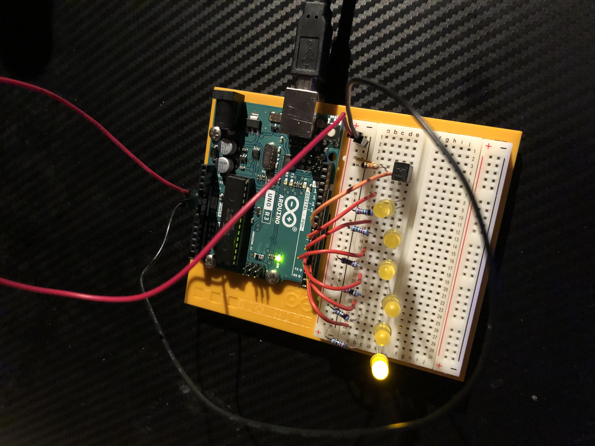

Immer nach einer bestimmten Zeit, in diesem Fall 6 Sekunden, fängt ein weiteres Licht an zu leuchten.
Wenn man das Gerät bewegt gehen die Lichter aus und die Zeit wird zurückgesetzt.
const int switchPin = 8;
unsigned long previousTime = 0; //Speichert den Zeitpunkt an dem ein LED zuletzt geändert wurde.
int switchState = 0;
int prevSwitchState = 0;
int led = 2;
long interval = 6000; //Zeit bis das nächste LED leuchtet, in Millisekunden.
void setup() {
for(int x = 2;x<8;x++){ //Led-Pins 2-8 werden als Output deklariert.
pinMode(x, OUTPUT);
}
}
void loop() {
unsigned long currentTime = millis(); //Zählt die Zeit die ab dem Start vergangen ist.
if(currentTime - previousTime > interval) { //Nach der Zeit die man als interval angegeben hat fängt das nächste LED an zu leuchten.
previousTime = currentTime;
digitalWrite(led, HIGH);
led++;
if(led == 7){ //Hier könnte man noch schreiben was passieren soll, wenn alle LEDs an sind.
}
}
switchState = digitalRead(switchPin); //(
if(switchState != prevSwitchState){
for(int x = 2;x<8;x++){
digitalWrite(x, LOW); //Kontrolliert ob sich der switchState (der Tilt-Sensor) geändert hat.
} //Falls ja, dann werden die LEDs wieder ausgeschaltet und der zuletzt gespeicherte Zeitpunkt
mit der derzeitegen Zeit gleichgesetzt.
led = 2;
previousTime = currentTime; //)
}
prevSwitchState = switchState;
}
